Изучаем лицензию. Если лицензия подходит, помечаем «I accept the terms of the license agreement» и нажимаем «Finish».
Изучаем лицензию. Если лицензия подходит, помечаем «I accept the terms of the license agreement» и нажимаем «Finish».Настраиваем Python в Eclipse и пишем Hello World!
В предыдущей заметке были рассмотрены только дистрибутивы Linux, где Python поставляется «из коробки» и есть замечательный редактор gedit, в котором можно редактировать скрипты.
Однако пока еще не все перешли на Linux ;)
Кроме того, для разработки на Python удобно использовать полноценную IDE. Eclipse — кросплатформенная среда разработки, поэтому рассмотрим его настройку как в Windows, так и в Linux. Eclipse распространяется под свободной лицензией EPL.
Постараюсь описать все максимально подробно. Если будут вопросы - задавайте в комментариях.
Установка интерпретатора Python в Windows
Скачиваем последнюю версию Python 2.7.x для Windows с официального сайта: <http://python.org/download/>. На момент написания это версии:
Нужно скачивать последнюю версию в ветке 2.7, то есть 2.7.3, 2.7.4, 2.7.5...
Устанавливаем интерпретатор Python в директорию C:\Python2.7.
Устанавливаем Eclipse
Скачиваем версию Eclipse IDE for Java Developers (или Classic) для нужной операционной системы и разрядности (32-бита/64-бита) с официального сайта: <http://www.eclipse.org/downloads/>.
Установка очень простая - распаковываем содержимое архива в C:\eclipse, либо в /home/username/eclipse и запускаем исполняемый файл eclipse.exe (eclipse в Linux).
Устанавливаем PyDev
PyDev (<http://pydev.org/>) - плагин для работы с Python в Eclipse.
Запускаем Eclipse.
Выбираем Help — «Install New Software...»: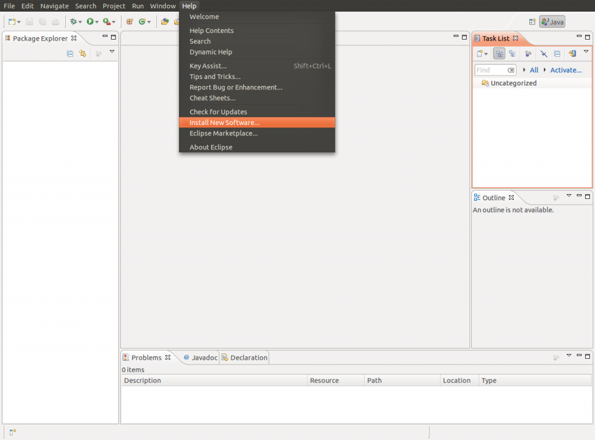
Открывается окно: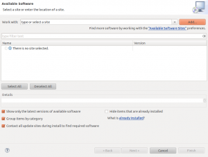
Нажимаем «Add...». Появляется диалоговое окно: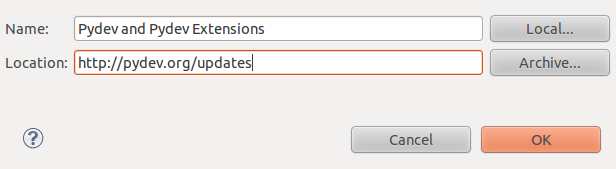
В поле Name пишем: «Pydev and Pydev Extensions», в поле Location: «http://pydev.org/updates». Нажимаем «OK».
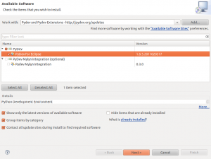Ставим галочку напротив «Pydev for Eclipse» и нажимаем «Next».
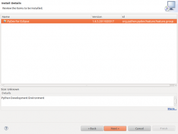Снова нажимаем «Next».
Изучаем лицензию. Если лицензия подходит, помечаем «I accept the terms of the license agreement» и нажимаем «Finish».
На запрос: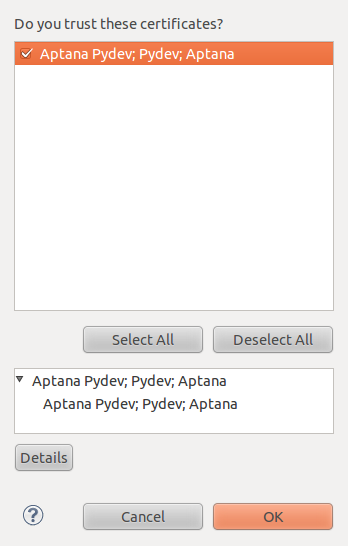Отвечаем «OK».
Pydev установлен. Перезапускаем Eclipse.
Создаем проект 'Hello World'
Нажимаем правой кнопкой мыше в пространстве Package Explorer, выбираем New—Project...: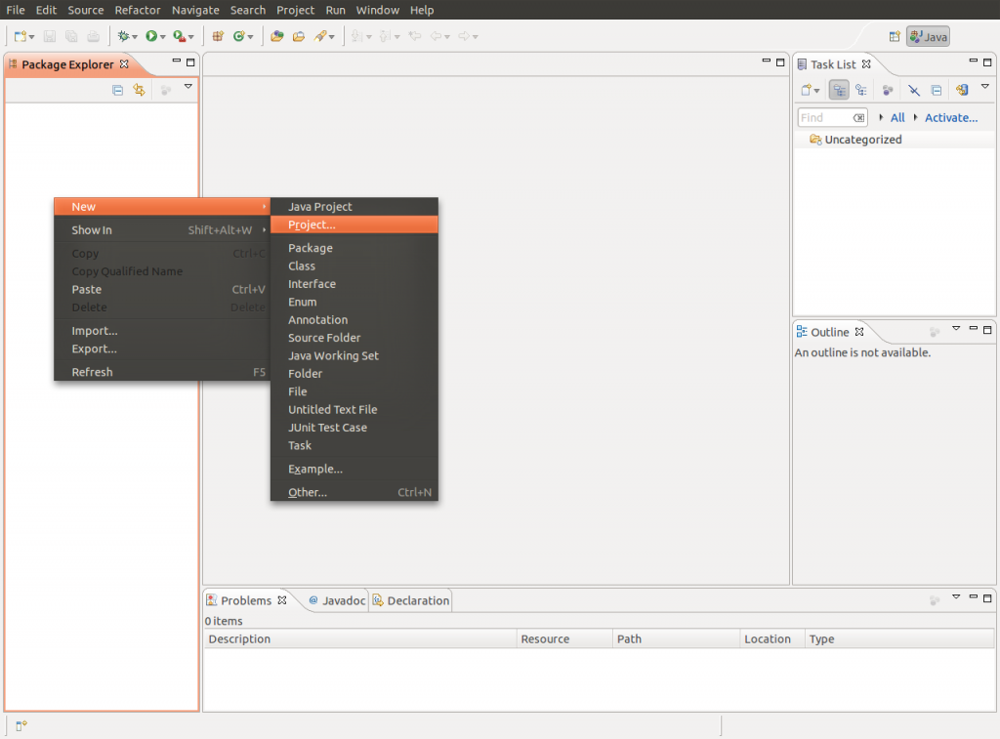
Выбираем «Pydev Project» и нажимаем «Next»: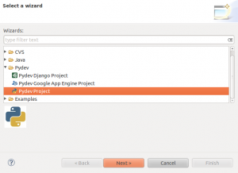
На следующей странице: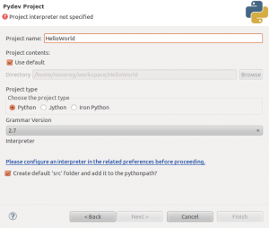Project Name: «Hello World», нажимаем ссылку: «Please configure an interpreter in the related preferences before proceeding.».
Появляется окно настройки интерпретаторов Python: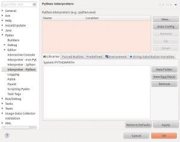
Нажимаем «New...».
В появившемся диалоговом окне: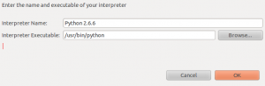В поле Interpreter Name пишем «Python 2.x», где x - установленная версия интерпретатора Python. В поле Interpreter Executable выбираем путь к исполняемому файлу Python.
Для Windows здесь будет: C:\Python2.7\python.exe, если был установлен интерпретатор Python 2.7 в директорию «C:\Python2.7».
Для Linux это: /usr/bin/python - для системной версии Python (для начала этот вариант подойдет),/usr/local/bin/python2.7 - для версии Python, установленной вручную.
Нажимаем «OK».
В окнах:
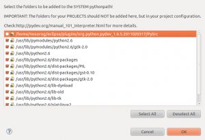
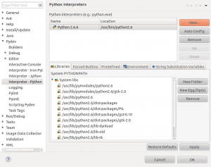
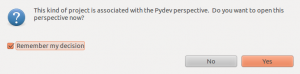
Нажимаем «OK», «OK», «Yes».
В «Pydev Package Explorer» нажимаем правой кнопкой на директорию \src и выбираем в появившемся меню: New—Pydev Module: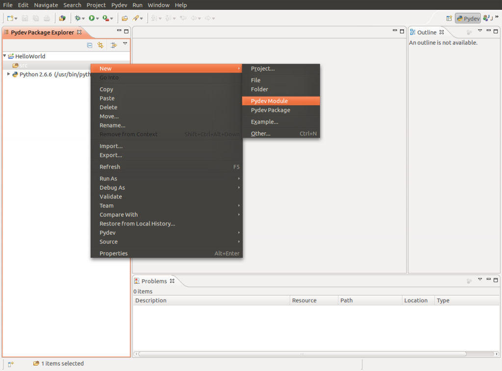
Появится окно:
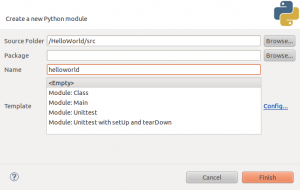
В поле Name пишем «helloworld» и нажимаем «Finish».
Создаем программу «Hello World», описанную в предыдущей заметке: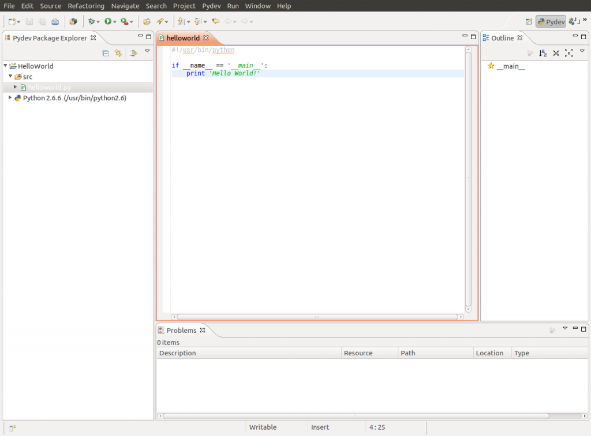
Запускаем скрипт (меню: Run - Run, Ctrl-F11):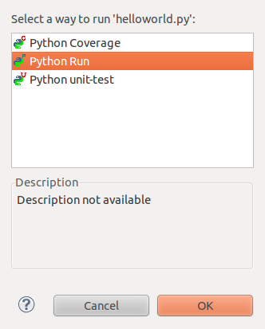
И видим результат в Console: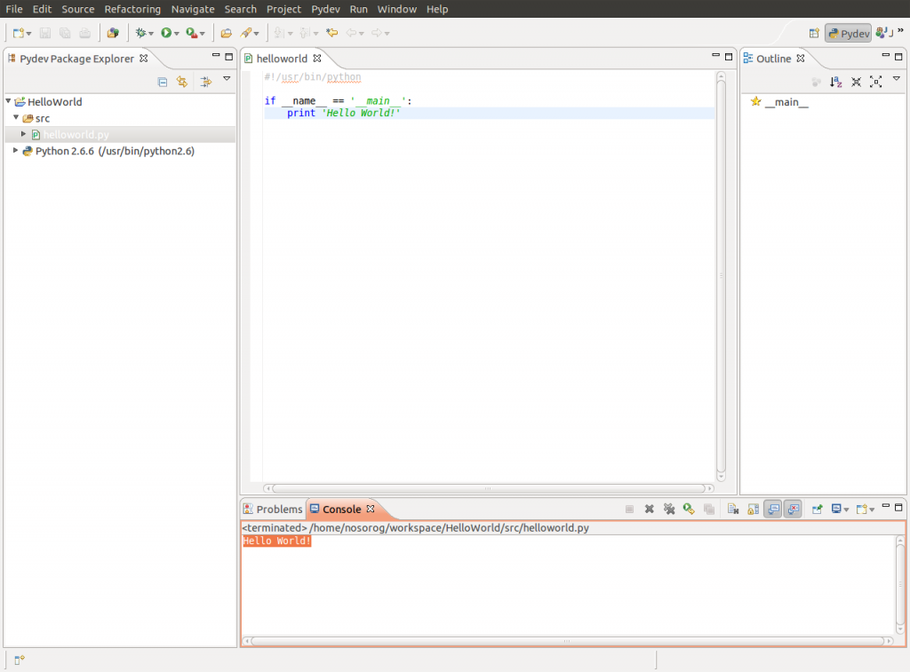
Вот и все! Теперь можно переходить к более серьезным скриптам.